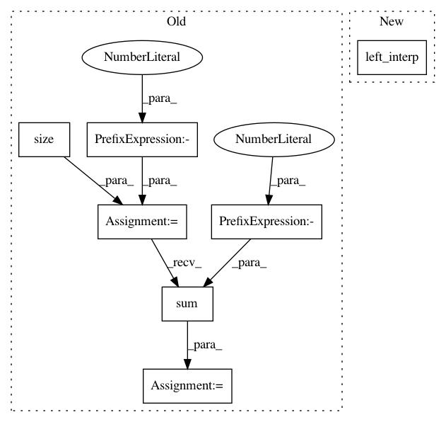

35c0192599fb5d4ace2fb6f8f363a42d1cbb972c,gpytorch/inducing_points/grid_inducing_point_module.py,GridInducingPointModule,__call__,#GridInducingPointModule#Any#,92
Before Change
// Left multiply samples by interpolation matrix
interp_indices = Variable(interp_indices)
interp_values = Variable(interp_values)
mean_output = induc_output.mean().index_select(0, interp_indices.view(-1)).view(*interp_values.size())
mean_output = mean_output.mul(interp_values)
mean = mean_output.sum(-1)
// Compute test covar
base_lv = induc_output.covar()
covar = InterpolatedLazyVariable(base_lv, interp_indices, interp_values, interp_indices, interp_values)
After Change
// Left multiply samples by interpolation matrix
interp_indices = Variable(interp_indices)
interp_values = Variable(interp_values)
test_mean = left_interp(interp_indices, interp_values, alpha)
// Compute test covar
if self.training:
base_lv = induc_output.covar()
In pattern: SUPERPATTERN
Frequency: 3
Non-data size: 7
Instances
Project Name: cornellius-gp/gpytorch
Commit Name: 35c0192599fb5d4ace2fb6f8f363a42d1cbb972c
Time: 2017-11-13
Author: gpleiss@gmail.com
File Name: gpytorch/inducing_points/grid_inducing_point_module.py
Class Name: GridInducingPointModule
Method Name: __call__
Project Name: cornellius-gp/gpytorch
Commit Name: 35c0192599fb5d4ace2fb6f8f363a42d1cbb972c
Time: 2017-11-13
Author: gpleiss@gmail.com
File Name: gpytorch/variational/grid_inducing_point_strategy.py
Class Name: GridInducingPointStrategy
Method Name: variational_samples
Project Name: cornellius-gp/gpytorch
Commit Name: d6153851bcc85c18a8fcb8a4030c8a4f8b415a75
Time: 2017-11-14
Author: gpleiss@gmail.com
File Name: gpytorch/inducing_points/additive_grid_inducing_point_module.py
Class Name: AdditiveGridInducingPointModule
Method Name: __call__